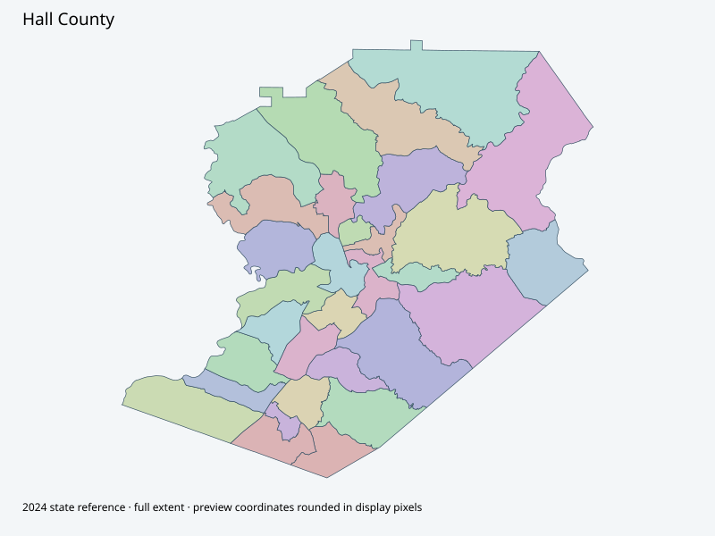

Map index · 31 explicit-FIPS 2024 map rows; 31 historical result identities. No approved crosswalk.

Full native coordinate/attribute extraction (gzip JSON) · Original complete statewide ZIP
Actual county GIS page links Election District Lookup app, then webmap, then ElectionsTab layer8. All31 advertised feature IDs and geometries captured; not an approved historical/current reporting crosswalk.
Full objects, county source IDs/clocks and attributes: all 2,701 native contexts. isVirtual:false and source label precinct do not prove physical geometry.
| Source name | Full source GUID | Breakdown ordinal | Source | Map status |
|---|---|---|---|---|
| Wilson | 01000000-d884-2e72-f58c-08dcda4bc3fd | 0 | 2024NovGen--hall-county-ga | unreviewed / no approved map join |
| Chicopee | 01000000-d884-2e72-8376-08dcda4bc408 | 1 | 2024NovGen--hall-county-ga | unreviewed / no approved map join |
| Oakwood I | 01000000-d884-2e72-cf9d-08dcda4bc412 | 2 | 2024NovGen--hall-county-ga | unreviewed / no approved map join |
| Oakwood II | 01000000-d884-2e72-0515-08dcda4bc41d | 3 | 2024NovGen--hall-county-ga | unreviewed / no approved map join |
| Flowery Branch I | 01000000-d884-2e72-bd19-08dcda4bc428 | 4 | 2024NovGen--hall-county-ga | unreviewed / no approved map join |
| Flowery Branch II | 01000000-d884-2e72-f0e1-08dcda4bc434 | 5 | 2024NovGen--hall-county-ga | unreviewed / no approved map join |
| Roberts | 01000000-d884-2e72-c1b1-08dcda4bc43f | 6 | 2024NovGen--hall-county-ga | unreviewed / no approved map join |
| Morgan I | 01000000-d884-2e72-cbc6-08dcda4bc44b | 7 | 2024NovGen--hall-county-ga | unreviewed / no approved map join |
| Morgan II | 01000000-d884-2e72-b6dd-08dcda4bc457 | 8 | 2024NovGen--hall-county-ga | unreviewed / no approved map join |
| Candler | 01000000-d884-2e72-dda5-08dcda4bc462 | 9 | 2024NovGen--hall-county-ga | unreviewed / no approved map join |
| Tadmore | 01000000-d884-2e72-b83b-08dcda4bc46d | 10 | 2024NovGen--hall-county-ga | unreviewed / no approved map join |
| Glade | 01000000-d884-2e72-89f9-08dcda4bc478 | 11 | 2024NovGen--hall-county-ga | unreviewed / no approved map join |
| Lula | 01000000-d884-2e72-bec8-08dcda4bc484 | 12 | 2024NovGen--hall-county-ga | unreviewed / no approved map join |
| Clermont | 01000000-d884-2e72-d715-08dcda4bc490 | 13 | 2024NovGen--hall-county-ga | unreviewed / no approved map join |
| Quillians | 01000000-d884-2e72-7062-08dcda4bc49e | 14 | 2024NovGen--hall-county-ga | unreviewed / no approved map join |
| Bark Camp | 01000000-d884-2e72-b30b-08dcda4bc4ab | 15 | 2024NovGen--hall-county-ga | unreviewed / no approved map join |
| Chestatee | 01000000-d884-2e72-7c62-08dcda4bc4b6 | 16 | 2024NovGen--hall-county-ga | unreviewed / no approved map join |
| Fork | 01000000-d884-2e72-0bf9-08dcda4bc4c1 | 17 | 2024NovGen--hall-county-ga | unreviewed / no approved map join |
| Whelchel | 01000000-d884-2e72-e007-08dcda4bc4cb | 18 | 2024NovGen--hall-county-ga | unreviewed / no approved map join |
| West Whelchel | 01000000-d884-2e72-6c2f-08dcda4bc4d6 | 19 | 2024NovGen--hall-county-ga | unreviewed / no approved map join |
| Gainesville I | 01000000-d884-2e72-5790-08dcda4bc4e1 | 20 | 2024NovGen--hall-county-ga | unreviewed / no approved map join |
| Gainesville II | 01000000-d884-2e72-733a-08dcda4bc4ec | 21 | 2024NovGen--hall-county-ga | unreviewed / no approved map join |
| Gainesville III | 01000000-d884-2e72-2aee-08dcda4bc4f7 | 22 | 2024NovGen--hall-county-ga | unreviewed / no approved map join |
| Gainesville IV | 01000000-d884-2e72-a9fa-08dcda4bc501 | 23 | 2024NovGen--hall-county-ga | unreviewed / no approved map join |
| Gainesville V | 01000000-d884-2e72-405d-08dcda4bc50c | 24 | 2024NovGen--hall-county-ga | unreviewed / no approved map join |
| Gillsville | 01000000-d884-2e72-253a-08dcda4bc517 | 25 | 2024NovGen--hall-county-ga | unreviewed / no approved map join |
| Big Hickory | 01000000-d884-2e72-0dd0-08dcda4bc522 | 26 | 2024NovGen--hall-county-ga | unreviewed / no approved map join |
| Friendship I | 01000000-d884-2e72-a99e-08dcda4bc52c | 27 | 2024NovGen--hall-county-ga | unreviewed / no approved map join |
| Friendship II | 01000000-d884-2e72-aa37-08dcda4bc537 | 28 | 2024NovGen--hall-county-ga | unreviewed / no approved map join |
| Friendship III | 01000000-d884-2e72-4a28-08dcda4bc542 | 29 | 2024NovGen--hall-county-ga | unreviewed / no approved map join |
| Friendship IV | 01000000-d884-2e72-a15f-08dcda4bc54c | 30 | 2024NovGen--hall-county-ga | unreviewed / no approved map join |
| Original row ordinal | DISTRICT | PRECINCT_I | PRECINCT_N |
|---|---|---|---|
| 207 | 13928 | 28 | FRIENDSHIP I |
| 208 | 1398 | 8 | MORGAN I |
| 209 | 1399 | 9 | MORGAN II |
| 210 | 1392 | 2 | CHICOPEE |
| 211 | 13923 | 23 | GAINESVILLE III |
| 212 | 13924 | 24 | GAINESVILLE IV |
| 213 | 13925 | 25 | GAINESVILLE V |
| 214 | 13910 | 10 | CANDLER |
| 215 | 13921 | 21 | GAINESVILLE I |
| 216 | 13922 | 22 | GAINESVILLE II |
| 219 | 13911 | 11 | TADMORE |
| 220 | 13912 | 12 | GLADE |
| 221 | 13926 | 26 | GILLSVILLE |
| 222 | 13920 | 20 | WEST WHELCHEL |
| 223 | 13927 | 27 | BIG HICKORY |
| 224 | 13919 | 19 | WHELCHEL |
| 225 | 13915 | 15 | QUILLIANS |
| 227 | 13914 | 14 | CLERMONT |
| 228 | 13913 | 13 | LULA |
| 2191 | 1397 | 7 | ROBERTS |
| 2192 | 1396 | 6 | FLOWERY BRANCH II |
| 2195 | 13929 | 29 | FRIENDSHIP II |
| 2196 | 1395 | 5 | FLOWERY BRANCH I |
| 2197 | 13931 | 31 | FRIENDSHIP IV |
| 2198 | 13930 | 30 | FRIENDSHIP III |
| 2200 | 1394 | 4 | OAKWOOD II |
| 2201 | 1393 | 3 | OAKWOOD I |
| 2202 | 1391 | 1 | WILSON |
| 2203 | 13918 | 18 | FORK |
| 2205 | 13917 | 17 | CHESTATEE |
| 2206 | 13916 | 16 | BARK CAMP |